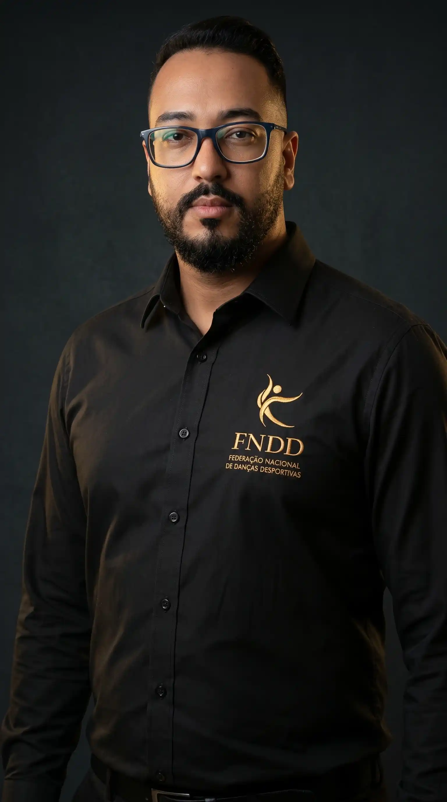

01
Dança como Esporte
Reconhecer a dança como prática esportiva exige técnica, disciplina, performance e critérios que valorizem sua evolução como modalidade.
A FNDD promove, representa e fortalece a dança desportiva no Brasil por meio de formação, competições, eventos e valorização profissional.

A FNDD nasce para organizar, valorizar e criar oportunidades para toda a cultura da dança.
A Federação Nacional de Danças Desportivas nasceu para fortalecer, organizar e valorizar a dança no Brasil, unindo professores, escolas, atletas, jurados, organizadores e amantes da arte.
Mais do que representar profissionais, a FNDD busca criar estrutura, reconhecimento e oportunidades para toda a classe da dança.
Um sonho de mais de 10 anos, consolidado para agregar, fortalecer e transformar a dança no Brasil.
A FNDD conecta formação, competições, representatividade e valorização profissional em uma estrutura pensada para impulsionar a dança como esporte, profissão e transformação social.

Reconhecer a dança como prática esportiva exige técnica, disciplina, performance e critérios que valorizem sua evolução como modalidade.
Apoiar a construção de conhecimento, preparo técnico e desenvolvimento contínuo para professores, atletas e profissionais da dança.
Fortalecer circuitos, congressos, workshops e encontros que movimentam a cena da dança e ampliam sua presença nacional.
Construir uma presença institucional capaz de conectar profissionais, escolas, companhias e organizações em diferentes regiões do país.
Promover o reconhecimento de quem vive, ensina, organiza, compete e trabalha com a dança como atividade profissional.
Usar a dança como ferramenta de inclusão, autoestima, bem-estar, cultura, educação e impacto positivo na vida das pessoas.
A FNDD atua para unificar, regular e impulsionar a dança desportiva como esporte e profissão em todo o país.
Conheça a FederaçãoA FNDD reúne profissionais com atuação na dança, formação, produção, gestão, comunicação e eventos para fortalecer a dança desportiva no Brasil com representatividade e visão institucional.

Desde 2010, o professor Paulo Humberto constrói uma trajetória marcada pela dedicação e transformação social através da dança. Fundador do estúdio PHD Dança em Santa Maria, ele promove a arte como ferramenta de inclusão e bem-estar. Bicampeão brasileiro de forró eletrônico e campeão mundial, atua ativamente na representatividade e valorização profissional da categoria no país. Como Presidente da FNDD, lidera o fortalecimento institucional da dança desportiva e articula diálogos para a implementação de políticas públicas no setor.
Conectamos profissionais, escolas e atletas através de um calendário oficial de cursos e competições, impulsionando e consagrando a dança desportiva em todo o Brasil.
Encontros formativos para troca de conhecimento, atualização técnica e fortalecimento da comunidade da dança.
Ações voltadas à organização, reconhecimento e valorização da dança como modalidade desportiva.
Estamos mapeando e credenciando os maiores congressos, competições e cursos de formação do país. Prepare-se para o novo circuito nacional.
Iniciativas para apoiar o desenvolvimento técnico, pedagógico e profissional de professores, atletas e praticantes.
Projetos, parcerias e movimentos que ampliam a presença da dança nos espaços culturais, esportivos e sociais.
Reunimos as principais dúvidas sobre atuação, filiação, eventos, formação e participação na Federação Nacional de Danças Desportivas.
"Organizar a dança é também tornar o caminho mais claro para quem deseja participar."
Professores, escolas, atletas, dançarinos, produtores, organizadores de eventos, companhias e profissionais ligados à dança que desejam fortalecer a modalidade de forma organizada e institucional.
Não. A federação também atua com formação, eventos, representatividade, valorização profissional, ações institucionais e fortalecimento da dança como esporte, profissão e expressão cultural.
Sim. Escolas, projetos, grupos e iniciativas ligadas à dança podem buscar aproximação com a FNDD para entender possibilidades de participação, filiação e integração às ações da federação.
A FNDD pode promover, apoiar e divulgar cursos, congressos, workshops e encontros formativos voltados ao desenvolvimento técnico, pedagógico e profissional da dança.
A agenda oficial será divulgada nos canais da federação. Enquanto isso, interessados podem entrar em contato para acompanhar novidades, eventos futuros e oportunidades de participação.
Não. A dança desportiva envolve atletas, professores, praticantes, escolas, profissionais da cultura, produtores e toda a comunidade que contribui para o crescimento da dança no Brasil.
Se você é professor, escola, atleta, produtor, organizador de eventos ou profissional da dança, entre em contato com a FNDD e acompanhe as possibilidades de participação, filiação e integração às ações da federação.
Fale conosco diretamente preenchendo o formulário abaixo. Acompanhe a federação também no @fndd.danca.
Você será direcionado para seu aplicativo de e-mail para concluir o envio.
A FNDD atua para conectar iniciativas da dança em uma rede nacional de valorização, formação e representatividade.